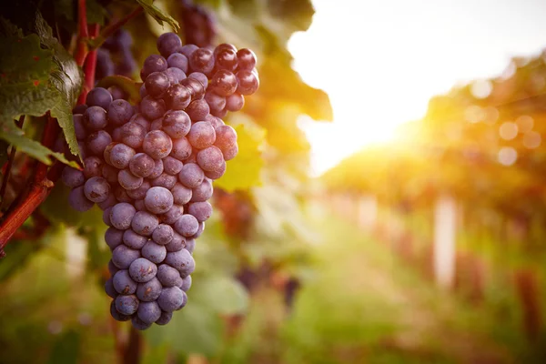

Nossa História
A Vinharia Agnello iniciou suas atividades em São Paulo há mais de 15 anos.
Somos uma empresa familiar dirigida pelo proprietário Giulio e sua filha Bianca.
Mesmo com o crescimento do mercado digital, mantemos nossa essência baseada no atendimento especializado e personalizado.

Nossa Equipe
Contamos com uma equipe de 6 funcionários, incluindo 3 vendedores que são profundos conhecedores do mundo dos vinhos.